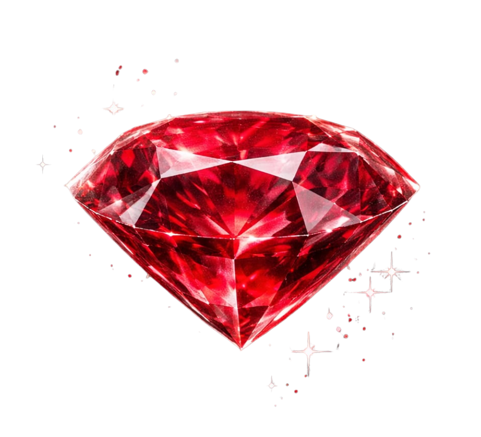
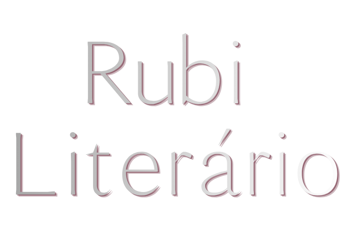

Biblioteca Rubra
Livros que brilham no escuro. Obras, autores e achados literários apresentados como peças de uma galeria viva.
Em breve


Um portal para vozes intensas, textos lapidados e novos universos.
Entrar no Rubi“Aqui, cada palavra é escolhida com intenção.”
O Rubi Literário nasceu para acolher histórias intensas, autores marcantes e textos que não nasceram para passar despercebidos. Esta voz representa a presença editorial do portal: sensível, seletiva e apaixonada pelo que merece permanecer.
Livros que brilham no escuro. Obras, autores e achados literários apresentados como peças de uma galeria viva.
Minicontos, chamadas culturais e vozes reveladas pela curadoria. Um espaço para histórias curtas com presença.
Perfis selecionados com cuidado editorial. Uma vitrine para autores que têm algo verdadeiro a dizer.
Critério, sensibilidade e presença. O Rubi busca textos com voz, imagem, risco e verdade.
Antes de abrir todas as portas, o Rubi revela seus primeiros sinais: uma carta, uma promessa e um caminho para novas vozes.
O Rubi Literário nasce para acolher histórias que carregam presença. Não queremos apenas textos bonitos. Queremos brilho, risco, imagem, verdade e memória.
O primeiro concurso cultural de minicontos está sendo lapidado. Em breve, novas vozes poderão enviar histórias curtas para serem reveladas pela curadoria.
Uma futura galeria de obras, autores independentes, leituras marcantes e achados literários apresentados com cuidado editorial.